번호 020
점심 도시락이 식어서 아쉽다면 · 무선 온열 도시락
[TV홈쇼핑] 무선 충전 가열 보온도시락 304 스텐 1인용
미리 충전해 두면 선 없이 동그란 버튼만 눌러 뚜껑 닫은 채로 데워지고, 온도도 고를 수 있어요. 안쪽 스테인리스 통은 빼서 씻어요.
쿠팡에서 보기릴스에 나온 생활 꿀템을 최신 순으로 모았어요
이 페이지는 쿠팡 파트너스 활동의 일환으로, 이에 따른 일정액의 수수료를 제공받습니다. 가격과 재고는 쿠팡에서 확인해 주세요.
영상 끝에 나온 번호를 넣으면 그 상품으로 바로 가요
맞는 상품이 없어요. 번호를 다시 확인해 주세요
점심 도시락이 식어서 아쉽다면 · 무선 온열 도시락
미리 충전해 두면 선 없이 동그란 버튼만 눌러 뚜껑 닫은 채로 데워지고, 온도도 고를 수 있어요. 안쪽 스테인리스 통은 빼서 씻어요.
쿠팡에서 보기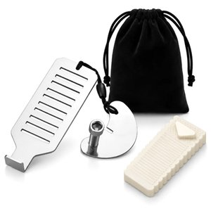
숙소에서 혼자 잘 때 불안하다면 · 휴대용 도어락
문틀 쪽 잠금 구멍에 금속 판을 끼우고 문을 닫으면, 걸어 둔 동안 열쇠나 카드키로도 밖에서 안 열려요.
쿠팡에서 보기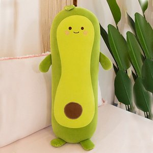
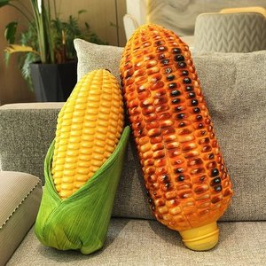
채소인 줄 알았던 채소과일템 TOP5 · 4위
노릇하게 구운 군옥수수 그대로라 한 입 베어 물고 싶어지는 쿠션이에요.
쿠팡에서 보기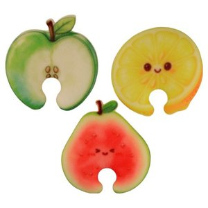
채소인 줄 알았던 채소과일템 TOP5 · 3위
수박·사과·레몬 모양 수세미로 설거지하고, 홈에 끼워 수도꼭지에 걸어 말려요.
쿠팡에서 보기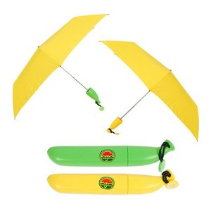
채소인 줄 알았던 채소과일템 TOP5 · 2위
바나나 모양 케이스를 벗기면 노란 우산이 나와요. 가방에 넣어도 진짜 바나나 같아요.
쿠팡에서 보기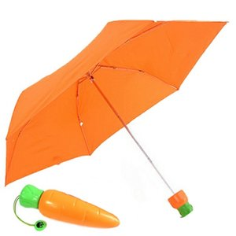
채소인 줄 알았던 채소과일템 TOP5 · 1위
당근 모양 케이스에서 쏙 뽑으면 주황색 3단 우산이 나와요. 햇빛 가리는 양산으로도 써요.
쿠팡에서 보기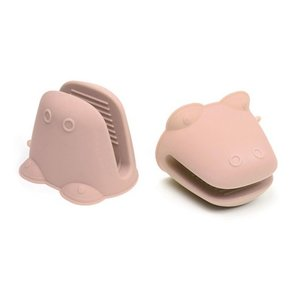
기상천외 동물 주방템 TOP5 · 5위
뜨거운 냄비 손잡이에 끼우면 악어가 앙 물어 줘서 맨손으로 잡아도 뜨겁지 않아요.
쿠팡에서 보기기상천외 동물 주방템 TOP5 · 4위
오리 배에 감자튀김을 담고, 오리 발바닥에 케첩을 짜서 찍어 먹어요.
쿠팡에서 보기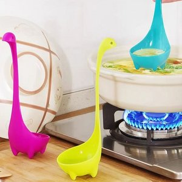
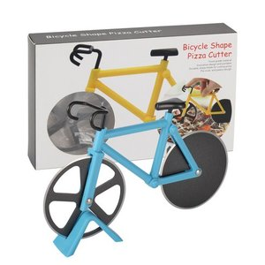
기상천외 동물 주방템 TOP5 · 1위
그릇 가장자리에 공룡을 걸어 두면 입으로 바람을 불어 뜨거운 국물과 면을 식혀 줘요. 줄을 달아 목에 거는 휴대 선풍기로도 써요.
쿠팡에서 보기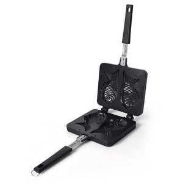
겨울 붕어빵이 먹고 싶은데 노점 찾기 어렵고 줄이 길어 한참 떨어야 함
가스레인지에 올려 반죽을 붓고 팥을 얹은 뒤 뚜껑을 닫아 앞뒤로 뒤집으면, 집에서 바로 노릇하고 바삭한 붕어빵 두 마리가 나와요.
쿠팡에서 보기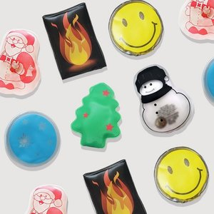
출근길·등굣길 손이 꽁꽁 얼어 폰도 키보드도 안 눌림
투명한 팩 속 작은 금속 단추를 똑 꺾으면 하얗게 굳으면서 따끈해지고, 다 쓰면 끓는 물에 넣어 다시 투명하게 되돌려 또 쓸 수 있어요.
쿠팡에서 보기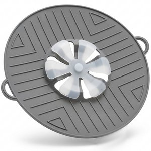
라면·찌개가 끓어 넘쳐 가스레인지가 엉망이 됨
냄비에 얹어 두면 끓어오른 거품이 가운데 꽃잎까지 올라왔다가 다시 가라앉아서 넘치지 않아요.
쿠팡에서 보기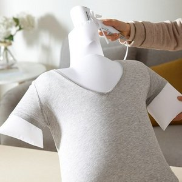
내일 입을 옷이 밤새 안 말라 아침에도 축축함
사람 몸통 모양 주머니를 젖은 티셔츠 안에 넣고 드라이기를 꽂으면, 옷이 사람이 입은 것처럼 빵빵하게 부풀어 안쪽부터 말라요.
쿠팡에서 보기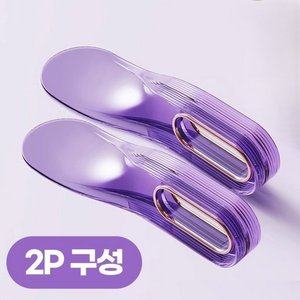
매트리스가 무거워 침대 시트 갈기가 허리 아프고 힘듦
납작한 투명 주걱을 매트리스 밑에 밀어 넣으면 한 손으로 매트리스가 들리고, 시트 끝을 틈 사이로 쏙 밀어 넣을 수 있어요.
쿠팡에서 보기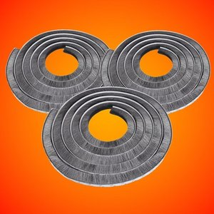
창문 닫아도 찬바람이 솔솔
창틀 틈에 접착 띠를 떼서 붙이면 솔이 틈을 메워 찬바람이 드는 길을 줄여 줘요. 남는 부분은 가위로 잘라 쓰면 돼요.
쿠팡에서 보기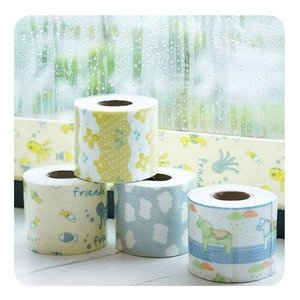
겨울 아침마다 창문이 물바다
유리 맨 아래에 붙여 두면 흘러내린 결로 물을 테이프가 머금어 창틀에 물이 덜 고여요. 창 길이에 맞게 가위로 잘라 붙이면 돼요.
쿠팡에서 보기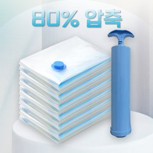
겨울 이불 꺼내니 옷장 문이 안 닫힘
이불·패딩을 넣고 지퍼를 끝까지 잠근 뒤 손펌프로 밸브에서 공기를 빼면 납작해져 옷장에 세워 넣을 수 있어요.
쿠팡에서 보기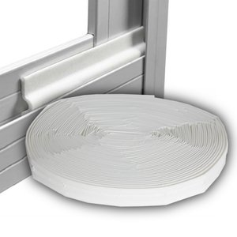
창문 닫아도 들어오는 외풍
창틀 틈새에 끼워 찬바람이 들어오는 길을 줄여 줘요. 창 길이에 맞춰 잘라 쓰면 돼요.
쿠팡에서 보기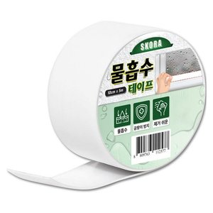
아침마다 창틀에 고이는 결로 물
유리 맨 아래에 붙이면 흘러내린 물을 머금어 창틀에 물이 덜 고여요. 다 젖으면 새 걸로 갈아 주세요.
쿠팡에서 보기